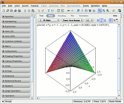
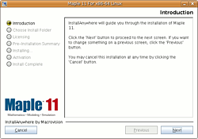

Maple
Dieser Artikel wurde für die folgenden Ubuntu-Versionen getestet:
Ubuntu 14.04 Trusty Tahr
Zum Verständnis dieses Artikels sind folgende Seiten hilfreich:
Maple  ist ein kommerzielles Computer-Algebra-System, mit dem interaktiv mathematische Dokumente erstellt werden können. Mit Maple können mathematische Rechnungen symbolisch und numerisch durchgeführt werden. Es ist möglich, eigene mathematische Programme zu erstellen. Weiterhin hilft die Software bei der Visualisierung der Ergebnisse. Da Maple auf Java basiert, ist es auf vielen Betriebssystemen lauffähig.
ist ein kommerzielles Computer-Algebra-System, mit dem interaktiv mathematische Dokumente erstellt werden können. Mit Maple können mathematische Rechnungen symbolisch und numerisch durchgeführt werden. Es ist möglich, eigene mathematische Programme zu erstellen. Weiterhin hilft die Software bei der Visualisierung der Ergebnisse. Da Maple auf Java basiert, ist es auf vielen Betriebssystemen lauffähig.
Vorbereitung¶

Vor der Maple-Installation muss als erstes eine Java-Laufzeitumgebung (JRE) installiert werden und auf der Zielfestplatte müssen ca. 650 MB freier Speicherplatz zur Verfügung stehen. Nach der Installation wird noch eine Lizenz benötigt, bevor die Software genutzt werden kann. Es gibt Netzwerk- und Einzelplatzlizenzen für Maple. Dieser Artikel behandelt nicht die Einrichtung eines Lizenzservers. Wenn man über eine Einzelplatzlizenz verfügt, dann sollte man entweder den Aktivierungscode (purchase code) oder die Lizenzdatei (licence.dat) bereit halten.
Installation¶
Basisinstallation¶
Je nachdem wie man Maple geliefert bekommen hat, besitzt man eine CD mit den Installationsdateien oder ein einzelnes .tar.gz-Archiv. Sollte man Maple als Archiv heruntergeladen haben, so muss man das Archiv entpacken [2] und dann in einem Terminal [1] und in das neu entstandene Verzeichnis wechseln. Besitzt man eine CD, so kann man nach dem Einlegen der CD gleich den passenden Ordner öffnen.
Hinweis!
Fremdsoftware kann das System gefährden.
Dort kann man nun mit folgendem Befehl die Installation starten. Je nach Maple-Version wird die Installationsroutine unterschiedlich gestartet.
Maple 15¶
sudo sh Maple15Linux32Installer.bin # Auf einem 32-bit System sudo sh Maple15LinuxX86_64Installer.bin # Auf einem 64-bit System
Dies ist jeweils mit -i console auch als Installation, die nur via Konsole erfolgt, möglich. Siehe Installationsanweisung .
Maple 14¶
sudo sh Maple14Linux32Installer.bin # Auf einem 32-bit-System sudo sh Maple14LinuxX86_64Installer.bin # Auf einem 64-bit-System
Dies ist jeweils mit -i console auch als Installation, die nur via Konsole erfolgt, möglich. Siehe Installationsanweisung .
Maple 13¶
sudo sh Maple13Linux32Installer.bin # Auf einem 32-bit-System sudo sh Maple13LinuxX86_64Installer.bin # Auf einem 64-bit-System
Dies ist jeweils mit -i console auch als Installation, die nur via Konsole erfolgt, möglich. Siehe Installationsanweisung .
Maple 11¶
sudo sh installMapleLinux32 # Auf einem 32-bit-System sudo sh installMapleLinux64 # Auf einem 64-bit-System sudo sh installMapleLinux64Itanium # Auf einem 32-bit-System mit einer Itanium-CPU
Maple 9¶
sudo sh installMapleLinuxSU LAX_VM /usr/bin/java

Jetzt sollte der graphische Installationsprozess starten. Dabei muss man lediglich das Installationsverzeichnis in z.B. /opt/maple ändern. Im Verlauf des weiteren Artikels wird von diesem Installationsort ausgegangen.
Nach der Installation wird man gefragt, ob man Maple aktivieren möchte. Hat man einen Aktivierungscode, so kann man Maple nun direkt aktivieren. Ist man im Besitz einer licence.dat kann man diese nun mit Root-Rechten[5] in den Ordner /opt/maple/license kopieren.
Symbolischen Link setzen¶
Jetzt erstellt man noch einen Verweis, damit man Maple oder die grafische Version Xmaple auch von überall ausführen kann. Ohne diese symbolischen Link müsste man immer den kompletten Pfad angeben. Dazu gibt man im Terminal [2] folgenden Befehl ein:
sudo ln -s /opt/maple/bin/xmaple /usr/local/bin/
Maple starten¶
Nun kann man Maple über die Befehle
xmaple xmaple -cw # Startet Maple mit dem "Classic Worksheet", allerdings funktioniert dies nur mit der 32-bit-Version
starten [4].
Eintrag in das Anwendungsmenü¶
Leider wird bei der Installation kein Eintrag im Anwendungsmenü angelegt, dies könnte jeder Benutzer des Systems selber mit Hilfe des Menüeditors manuell machen. Alternativ kann man über eine .desktop-Datei einen systemweiten Eintrag erzeugen. Dazu erstellt man mit einem Editor mit Root-Rechten [3] die Datei /usr/share/applications/maple.desktop und fügt folgenden Inhalt ein:
[Desktop Entry] Encoding=UTF-8 Name=Maple Comment=A powerful Computer-Algebra-System Comment[de]=Ein leistungsfähiges Computer-Algebra-System Exec=xmaple Terminal=false StartupNotify=true Type=Application Categories=Education; Icon=maple_48.png
Als Icon für den Eintrag im Anwendungsmenü kann man dieses Symbolbild  verwenden. Damit es zu dem oben genannten Eintrag passt, muss man das Bild als maple_48.png abspeichern und mit Root-Rechten nach /usr/share/pixmaps/ kopieren. Der Einfachheit halber kann man dies über
verwenden. Damit es zu dem oben genannten Eintrag passt, muss man das Bild als maple_48.png abspeichern und mit Root-Rechten nach /usr/share/pixmaps/ kopieren. Der Einfachheit halber kann man dies über
sudo wget http://media.ubuntuusers.de/wiki/attachments/34/28/maple_48.png -O /usr/share/pixmaps/maple_48.png
machen. Anschließend kann man Maple über "Anwendungen -> Bildung -> Maple" starten.
Problembehebung¶
Maple stürzt beim Rendern eines Plots ab¶
Dies liegt mit großer Wahrscheinlichkeit daran, dass das von Maple benutzte Hardware-Rendering nicht funktioniert. Um auf Software-Rendering umzustellen, muss die ausführbare Maple-Datei (z.B. /opt/maple/bin/maple) mit Root-Rechten geöffnet und die Zeilen
# USE_SOFTWARE_GL=1 # export USE_SOFTWARE_GL
zu
USE_SOFTWARE_GL=1 export USE_SOFTWARE_GL
geändert werden (Quelle ).
Weißes Maple-Fenster¶
Ältere Versionen von Maple installierten automatisch eine Java-Laufzeitumgebung (JRE), die nicht gut mit Ubuntu zusammen arbeitete. Man erkennt dies daran, dass Maple zwar startet, aber nur ein weißes Fenster sichtbar wird. Hier ist es besser, auf die JRE von Oracle zu verweisen. Dazu muss die durch Maple installierte ausführbare Java-Datei gegen einen Link zu Oracle Java ausgetauscht werden.
Hinweis:
Maple 13 oder neuer funktionieren auch mit dem OpenJDK.
32-bit-Maple¶
sudo mv /opt/maple/jre.IBM_INTEL_LINUX/bin/java /opt/maple/jre.IBM_INTEL_LINUX/bin/java.old sudo ln -s /usr/bin/java /opt/maple/jre.IBM_INTEL_LINUX/bin/java
64-bit-Maple¶
sudo mv /opt/maple/jre.X86_64_LINUX/bin/java /opt/maple/jre.X86_64_LINUX/bin/java.old sudo ln -s /usr/bin/java /opt/maple/jre.X86_64_LINUX/bin/java
Drucken funktioniert nicht¶
Gleiches Problem wie oben mit Java: siehe Weißes Maple Fenster.
Installation schlägt bei Maple 10 (auch Maple 9.5) fehl¶
Für den Fall, dass die Installation mit folgender Fehlermeldung abbricht:
/media/cdrom$ sudo sh installMapleLinuxSU Preparing to install... Extracting the JRE from the installer archive... Unpacking the JRE... Extracting the installation resources from the installer archive... Configuring the installer for this system's environment... nawk: error while loading shared libraries: libdl.so.2: cannot open shared object file: No such file or directory dirname: error while loading shared libraries: libc.so.6: cannot open shared object file: No such file or directory /bin/ls: error while loading shared libraries: librt.so.1: cannot open shared object file: No such file or directory basename: error while loading shared libraries: libc.so.6: cannot open shared object file: No such file or directory dirname: error while loading shared libraries: libc.so.6: cannot open shared object file: No such file or directory basename: error while loading shared libraries: libc.so.6: cannot open shared object file: No such file or directory hostname: error while loading shared libraries: libc.so.6: cannot open shared object file: No such file or directory Launching installer... grep: error while loading shared libraries: libc.so.6: cannot open shared object file: No such file or directory /tmp/install.dir.13374/Linux/resource/jre/bin/java: error while loading shared libraries: libpthread.so.0: cannot open shared object file: No such file or directory
kann man man folgende Installationsanleitung verwenden. Dabei werden alle Schritte über das Terminal [1] ausgeführt. Zuerst muss man ein temporäres Verzeichnis erstellen:
mkdir ~/tmpmaple
Anschließend muss man den Inhalt der Maple-CD in das soeben angelegte Verzeichnis kopieren:
cd /media/cdrom cp -R Linux ~/tmpmaple cp installMapleLinuxSU ~/tmpmaple
Nun wechselt man in das Verzeichnis, in dem sich das Installationsskript befindet:
cd ~/tmpmaple/Linux/Disk1/InstData/VM
Im nächsten Schritt wird die Zeile
export LD_ASSUME_KERNEL
in der Datei LinuxInstaller.bin auskommentiert:
sudo sed -i "s/export LD_ASSUME_KERNEL/#xport LD_ASSUME_KERNEL/" LinuxInstaller.bin
(Das 'e' wird durch ein '#' ersetzt, um die Dateilänge nicht zu verändern.)
Jetzt kann die Installation gestartet werden:
cd ~/tmpmaple sudo sh installMapleLinuxSU
Ab hier folgt man dann wieder der normalen Installationsanleitung.
- Erstellt mit Inyoka
-
 2004 – 2017 ubuntuusers.de • Einige Rechte vorbehalten
2004 – 2017 ubuntuusers.de • Einige Rechte vorbehalten
Lizenz • Kontakt • Datenschutz • Impressum • Serverstatus -
Serverhousing gespendet von